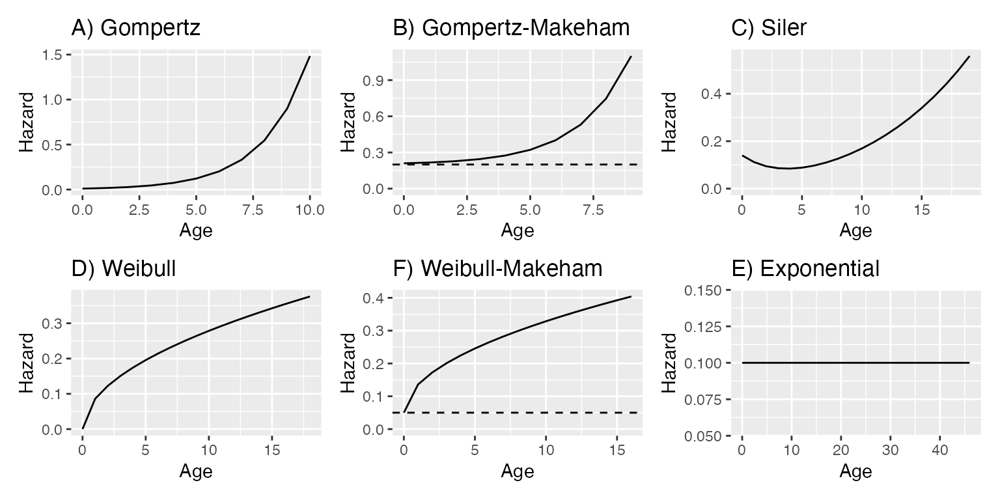
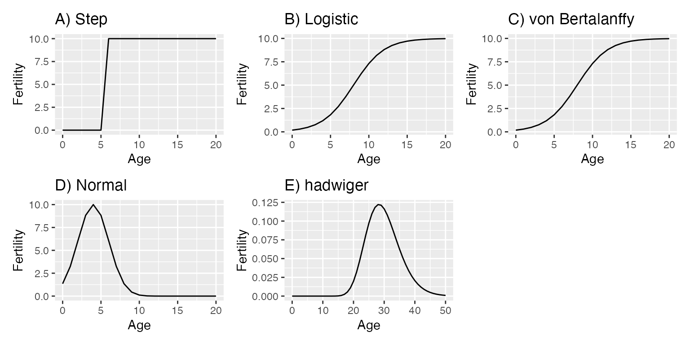
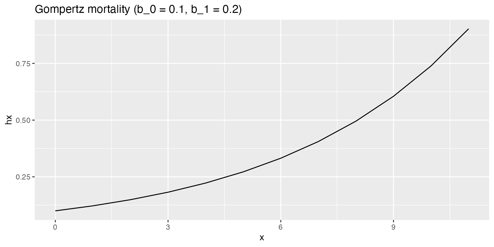
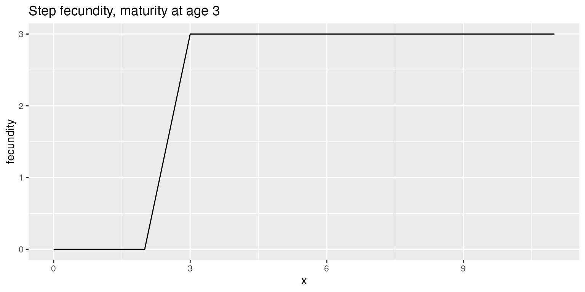

Generating Leslie matrices
2024-10-11
Source:vignettes/generate_leslie_models.Rmd
generate_leslie_models.RmdIntroduction
Leslie matrix models, named after Patrick Leslie who introduced them in the 1940s, are a type of matrix population model (MPM) used to describe the demography of age-structured populations. They are commonly used in studies of wildlife, conservation and evolutionary biology.
In a Leslie MPM, the square matrix is used to model discrete, age-structured population growth with a projection interval, most often representing years, as a time step. Each element in the matrix represents a transition probability between different age classes or indicates the average reproductive output (often referred to as fecundity in population biology and fertility in human demography) of the age class. The information in the MPM can be split into two submatrices, representing survival/growth and reproduction, respectively.
Survival Probabilities: The subdiagonal (immediately below the main diagonal) of the MPM consists of survival probabilities. Each entry here shows the probability that an individual of one age class will survive to the next age class. These probabilities can be understood as an age trajectory of survival that can be modelled using a mathematical model describing how age-specific mortality changes with age.
Reproductive Output: The first row of the MPM contains the reproductive output of each age class, representing the number of new individuals produced in each projection interval. This is often referred to as fecundity in ecological contexts.
All other entries in the MPM are typically zero, indicating that those transitions are impossible.
To project the population size and structure through time, the MPM is multiplied by a vector that represents the current population structure (number of individuals in each age class). This process results in a new vector that shows the predicted structure of the population in the next time step. This calculation can be iterated repeatedly to project population and structure through time.
Leslie matrices are useful for studying population dynamics under different scenarios, such as changes in survival rates, fecundity rates, or management strategies. They have been widely applied in both theoretical and applied ecology.
Aims
The aim of this vignette is to demonstrate how to simulate Leslie matrix population models (MPMs) using functional forms for mortality and reproduction. This simulation is useful for various purposes, including:
- Investigating the influence of senescence parameters on population dynamics.
- Generating MPMs based on empirical parameter estimates of mortality and reproduction from the literature.
- Creating MPMs with specific properties for educational and research purposes.
In the following sections, this document will:
- Explain the basics of mortality and reproduction trajectories.
- Show how to produce life tables reflecting trajectories of mortality and reproduction.
- Show how to produce MPMs from these life tables.
- Show how to generate sets of many MPMs based on defined mortality and reproduction characteristics.
1. Functional forms of mortality and reproduction
There are numerous published and well-used functional forms used to
describe how mortality risk (hazard) changes with age. The
model_mortality function (and its synonym
model_survival) handles 6 of these models: Gompertz,
Gompertz-Makeham, Weibull, Weibull-Makeham, Siler and Exponential.
In a nutshell:
- Gompertz: A mortality rate that increases exponentially with age.
- Gompertz-Makeham: A mortality rate that increases exponentially with age, with an additional age-independent constant mortality.
- Weibull: A mortality rate that scales with age, increasing at a rate that can either accelerate or decelerate, depending on the parameters of the model.
- Weibull-Makeham: as the basic Weibull, but with an additional age-independent constant mortality.
- Siler: A mortality model that separates mortality rates into two age-related components — juvenile mortality, which declines exponentially with age and adult mortality, which increases exponentially.
- Exponential: Constant mortality that is unchanging with age.
These are illustrated below.

In addition to these functional forms of mortality, there are, of
course, functional forms that have been used to model reproductive
output. The model_reproduction function (and its synonyms
model_fedundity and model_fertility) handles
five types: logistic, step, von Bertalanffy, normal and Hadwiger.
- Logistic: Reproductive output initially increases rapidly with age then slows to plateau as it approaches a maximum value.
- Step: Reproductive output is initially zero, then jumps to a particular level at a specified age, after which it remains constant.
- von Bertalanffy: This model is often used in growth dynamics but has been adapted for reproduction to describe changes over age or time following a logistic growth form not limited by a strict upper asymptote. It shows how reproductive output might increase and then decrease, following a more smoothed, sigmoid curve.
- Normal : Reproductive output is modelled as normal distribution to describe how reproductive output increases, peaks, and then decreases in a bell curve around a mean age of reproductive capacity.
- Hadwiger: The outcomes of this model is qualitatively similar to the normal distribution.

Collectively, these mortality and reproduction functions offer a large scope for modelling the variety of demographic trajectories apparent across the tree of life.
2. Trajectories of mortality and reproductive output, and production of life tables
To obtain a trajectory of mortality, users can use the
model_mortality function, which takes as input the
parameters of a specified mortality model. The output of this function
is a standard life table data.frame including columns for
age (x), age-specific hazard (hx),
survivorship (lx), age-specific probability of death and
survival (qx and px). By default, the life
table is truncated at the age when the survivorship function declines
below 0.01 (i.e. when only 1% of individuals in a cohort would remain
alive).
(lt1 <- model_mortality(params = c(b_0 = 0.1, b_1 = 0.2), model = "Gompertz"))
#> x hx lx qx px
#> 1 0 0.1000000 1.00000000 0.1051240 0.8948760
#> 2 1 0.1221403 0.89487598 0.1268617 0.8731383
#> 3 2 0.1491825 0.78135045 0.1526972 0.8473028
#> 4 3 0.1822119 0.66204041 0.1832179 0.8167821
#> 5 4 0.2225541 0.54074272 0.2190086 0.7809914
#> 6 5 0.2718282 0.42231542 0.2606027 0.7393973
#> 7 6 0.3320117 0.31225886 0.3084127 0.6915873
#> 8 7 0.4055200 0.21595427 0.3626343 0.6373657
#> 9 8 0.4953032 0.13764186 0.4231275 0.5768725
#> 10 9 0.6049647 0.07940180 0.4892807 0.5107193
#> 11 10 0.7389056 0.04055203 0.5598781 0.4401219
#> 12 11 0.9025013 0.01784784 0.6330059 0.3669941It can be useful to explore the impact of parameters on the mortality
hazard (hx) graphically, especially for users who are
unfamiliar with the chosen models.
ggplot(lt1, aes(x = x, y = hx)) +
geom_line() +
ggtitle("Gompertz mortality (b_0 = 0.1, b_1 = 0.2)")
The model_reproduction function is similar to the
model_mortality function, as it has arguments for the type
of reproduction model, and its parameters. However, the output of the
model_reproduction function is a vector of reproductive
output values rather than a data.frame. This allows us to
add a reproduction column (reproduction) directly to the
life table produced earlier, as follows:
(lt1 <- lt1 |>
mutate(reproduction = model_reproduction(
age = x, params = c(A = 3),
maturity = 3,
model = "step"
)))
#> x hx lx qx px reproduction
#> 1 0 0.1000000 1.00000000 0.1051240 0.8948760 0
#> 2 1 0.1221403 0.89487598 0.1268617 0.8731383 0
#> 3 2 0.1491825 0.78135045 0.1526972 0.8473028 0
#> 4 3 0.1822119 0.66204041 0.1832179 0.8167821 3
#> 5 4 0.2225541 0.54074272 0.2190086 0.7809914 3
#> 6 5 0.2718282 0.42231542 0.2606027 0.7393973 3
#> 7 6 0.3320117 0.31225886 0.3084127 0.6915873 3
#> 8 7 0.4055200 0.21595427 0.3626343 0.6373657 3
#> 9 8 0.4953032 0.13764186 0.4231275 0.5768725 3
#> 10 9 0.6049647 0.07940180 0.4892807 0.5107193 3
#> 11 10 0.7389056 0.04055203 0.5598781 0.4401219 3
#> 12 11 0.9025013 0.01784784 0.6330059 0.3669941 3Again, it can be useful to plot the relevant data to visualise it.
ggplot(lt1, aes(x = x, y = reproduction)) +
geom_line() +
ggtitle("Step reproduction, maturity at age 3")
3. From life table to MPM
Users can now turn these life tables, containing age-specific
survival and reproductive trajectories, into Leslie matrices using the
make_leslie_mpm function. These MPMs can be large or small
depending on the maximum life span of the population: as mentioned
above, the population is modelled until less than 1% of a cohort remains
alive.
make_leslie_mpm(lifetable = lt1)
#> [,1] [,2] [,3] [,4] [,5] [,6] [,7]
#> [1,] 0.000000 0.0000000 0.0000000 3.0000000 3.0000000 3.0000000 3.0000000
#> [2,] 0.894876 0.0000000 0.0000000 0.0000000 0.0000000 0.0000000 0.0000000
#> [3,] 0.000000 0.8731383 0.0000000 0.0000000 0.0000000 0.0000000 0.0000000
#> [4,] 0.000000 0.0000000 0.8473028 0.0000000 0.0000000 0.0000000 0.0000000
#> [5,] 0.000000 0.0000000 0.0000000 0.8167821 0.0000000 0.0000000 0.0000000
#> [6,] 0.000000 0.0000000 0.0000000 0.0000000 0.7809914 0.0000000 0.0000000
#> [7,] 0.000000 0.0000000 0.0000000 0.0000000 0.0000000 0.7393973 0.0000000
#> [8,] 0.000000 0.0000000 0.0000000 0.0000000 0.0000000 0.0000000 0.6915873
#> [9,] 0.000000 0.0000000 0.0000000 0.0000000 0.0000000 0.0000000 0.0000000
#> [10,] 0.000000 0.0000000 0.0000000 0.0000000 0.0000000 0.0000000 0.0000000
#> [11,] 0.000000 0.0000000 0.0000000 0.0000000 0.0000000 0.0000000 0.0000000
#> [12,] 0.000000 0.0000000 0.0000000 0.0000000 0.0000000 0.0000000 0.0000000
#> [,8] [,9] [,10] [,11] [,12]
#> [1,] 3.0000000 3.0000000 3.0000000 3.0000000 3.0000000
#> [2,] 0.0000000 0.0000000 0.0000000 0.0000000 0.0000000
#> [3,] 0.0000000 0.0000000 0.0000000 0.0000000 0.0000000
#> [4,] 0.0000000 0.0000000 0.0000000 0.0000000 0.0000000
#> [5,] 0.0000000 0.0000000 0.0000000 0.0000000 0.0000000
#> [6,] 0.0000000 0.0000000 0.0000000 0.0000000 0.0000000
#> [7,] 0.0000000 0.0000000 0.0000000 0.0000000 0.0000000
#> [8,] 0.0000000 0.0000000 0.0000000 0.0000000 0.0000000
#> [9,] 0.6373657 0.0000000 0.0000000 0.0000000 0.0000000
#> [10,] 0.0000000 0.5768725 0.0000000 0.0000000 0.0000000
#> [11,] 0.0000000 0.0000000 0.5107193 0.0000000 0.0000000
#> [12,] 0.0000000 0.0000000 0.0000000 0.4401219 0.36699414. Producing sets of MPMs based on defined model characteristics
It is sometimes desirable to create large numbers of MPMs with
particular properties in order to test hypotheses. For Leslie MPMs, this
can be implemented in a straightforward way using the function
rand_leslie_set. This function generates a set of Leslie
MPMs based on defined mortality and reproduction models, and using model
parameters that are randomly drawn from specified distributions. For
example, users may wish to generate MPMs for Gompertz models to explore
how rate of senescence influences population dynamics.
Users must first set up a data frame describing the distribution from
which parameters will be drawn at random. The data frame has a number of
rows equal to the number of parameters in the model, and two values to
describe the distribution. In the case of a uniform distribution, these
are the minimum and maximum parameter values, respectively and with a
normal distribution they represent the mean and standard deviation. The
parameters should be entered in the order they appear in the model
equations (see ?model_mortality), with the exact order
depending on the chosen mortality model.
For the Gompertz-Makeham model:
The output argument defines the output as one of six
types (Type1 through Type6). These outputs
include CompadreDB objects or list objects,
and the MPMs can be split into the component submatrices
(U and F, where the MPM,
A = U + F). In the
special case Type6 the outputs are provided as a
list of life tables rather than MPMs. If the output is set
as a CompadreDB object, the mortality and reproduction
model parameters used to generate the MPM are included as metadata.
The following example illustrates the production of 50 Leslie MPMs
output to a CompadreDB object based on the Gompertz-Makeham
mortality model and a step reproduction model with maturity beginning at
age 0. An optional argument, scale_output = TRUE will scale
the reproduction in the output MPMs to ensure that population growth
rate is lambda. The scaling algorithm multiplies the reproduction part
of the MPM (the F submatrix) by a simple scaling factor
to ensure the population growth rate is 1 while maintaining the shape
(but not the magnitude) of the reproduction trajectory. This should be
used with care: The desirability of such a manipulation strongly depends
on the use the MPMs are put to.
mortParams <- data.frame(
minVal = c(0, 0.01, 0.1),
maxVal = c(0.05, 0.15, 0.2)
)
reproductionParams <- data.frame(
minVal = 2,
maxVal = 10
)
maturityParam <- c(0, 0)
(myMatrices <- rand_leslie_set(
n_models = 50,
mortality_model = "GompertzMakeham",
reproduction_model = "step",
mortality_params = mortParams,
reproduction_params = reproductionParams,
reproduction_maturity_params = maturityParam,
dist_type = "uniform",
output = "Type1"
))
#> A COM(P)ADRE database ('CompadreDB') object with ?? SPECIES and 50 MATRICES.
#>
#> # A tibble: 50 × 8
#> mat mortality_model b_0 b_1 C reproduction_model A
#> <list> <chr> <dbl> <dbl> <dbl> <chr> <dbl>
#> 1 <CompdrMt> gompertzmakeham 0.0457 0.141 0.129 step 8.64
#> 2 <CompdrMt> gompertzmakeham 0.0321 0.0827 0.174 step 3.08
#> 3 <CompdrMt> gompertzmakeham 0.0328 0.109 0.146 step 7.75
#> 4 <CompdrMt> gompertzmakeham 0.0467 0.0458 0.146 step 9.52
#> 5 <CompdrMt> gompertzmakeham 0.0489 0.0264 0.147 step 6.48
#> 6 <CompdrMt> gompertzmakeham 0.0452 0.0294 0.199 step 9.57
#> 7 <CompdrMt> gompertzmakeham 0.00412 0.0820 0.139 step 9.25
#> 8 <CompdrMt> gompertzmakeham 0.0223 0.127 0.174 step 8.49
#> 9 <CompdrMt> gompertzmakeham 0.0194 0.106 0.100 step 8.66
#> 10 <CompdrMt> gompertzmakeham 0.000367 0.0391 0.191 step 6.89
#> # ℹ 40 more rows
#> # ℹ 1 more variable: reproduction_scaling <dbl>The function operates quite fast. For example, on an older MacBook (3.10GHz Intel with 4 cores), it takes 17 seconds to generate 5000 MPMs with the parameters mentioned above.
As an aid to assessing the simulation, users can produce a simple
summary of the MPMs using the summarise_mpms function.
Note, though, that this only works with CompadreDB outputs.
In this case, because we are working with Leslie MPMs, the dimension of
the MPMs is indicative of the maximum age reached by individuals in the
population.
summarise_mpms(myMatrices)
#> Summary of matrix dimension:
#> Min. 1st Qu. Median Mean 3rd Qu. Max.
#> 15.00 18.25 22.00 22.98 26.00 39.00
#> Summary of lambda values:
#> Min. 1st Qu. Median Mean 3rd Qu. Max.
#> 2.845 6.010 7.970 7.557 9.150 10.672
#>
#> Summary of maximum F values:
#> Min. 1st Qu. Median Mean 3rd Qu. Max.
#> 2.002 5.157 7.142 6.720 8.327 9.788
#>
#> Summary of maximum U values:
#> Min. 1st Qu. Median Mean 3rd Qu. Max.
#> 0.7829 0.8159 0.8347 0.8365 0.8545 0.8925
#>
#> Summary of minimum non-zero U values:
#> Min. 1st Qu. Median Mean 3rd Qu. Max.
#> 0.5715 0.6881 0.7650 0.7514 0.8160 0.8814After producing the output as a CompadreDB object, the
matrices can be accessed using functions from the RCompadre
R package. For example, to get the A matrix, or the U/F submatrices
users can use the matA, matU or
matF functions. The following code illustrates how to
rapidly calculate population growth rate for all of the matrices.
# Obtain the matrices
x <- matA(myMatrices)
# Calculate lambda for each matrix
sapply(x, popdemo::eigs, what = "lambda")
#> [1] 9.480062 3.889616 8.587381 10.343567 7.303660 10.356146 10.112353
#> [8] 9.308862 9.549256 7.720332 10.672096 7.928430 5.604869 8.872518
#> [15] 6.966830 7.339943 9.468459 3.993036 8.631979 2.871674 8.012464
#> [22] 3.567593 2.844529 8.688251 7.778629 5.968972 8.664013 9.523154
#> [29] 7.123514 9.482587 7.556071 10.495633 7.644149 7.441366 7.792883
#> [36] 9.092281 10.412818 5.422186 9.018497 8.325535 4.386485 5.377892
#> [43] 6.131147 3.940014 8.952296 4.907484 9.138780 9.154187 3.317446
#> [50] 8.668165Users can examine the vignettes for the Rcompadre and
Rage packages for additional insight into other potential
operations with the compadreDB object.
Conclusion
This vignette demonstrated how to generate Leslie matrices using functional forms of mortality and reproduction, allowing users to simulate virtual species with varied life histories. These matrices can be used to explore how life history or parameter differences affect population dynamics, supporting various research and educational applications.